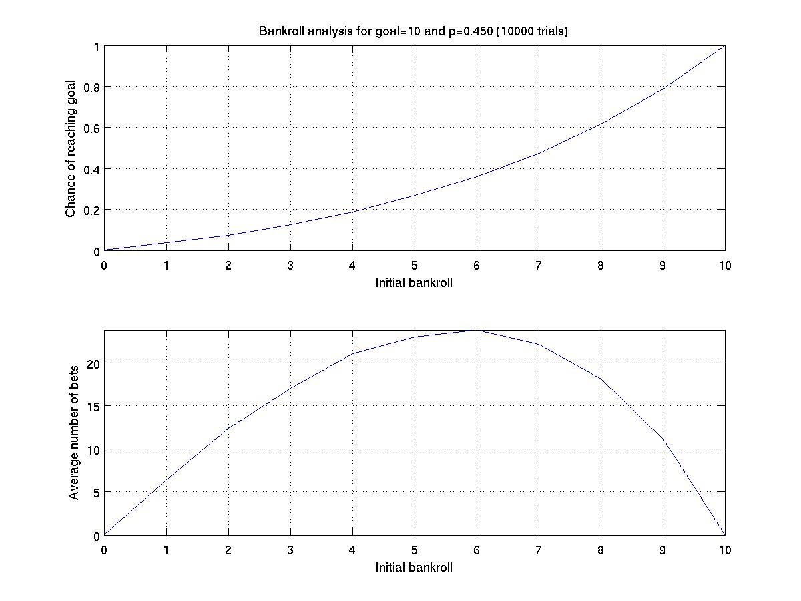

Consider the following simulation. A gambler starts with an initial bankroll (e.g., $50) and a target goal (e.g., $100). He or she then makes a series of $1 bets (winning each with independent probability 0 ≤ p ≤ 1 until reaching the goal or going broke.
We are interested in simulating this experiment to approximate two results:
To do so, we wish to have you implement a function, documented as follows.
function [success bets] = gambler(goal, initial, p) % Performs independent trials for a gambling simulation. % USAGE: [success round] = gambler(goal, initial, p) % A gambler begins with a bankroll designated as initial % and repeatedly bets $1 with a winning percentage of p % continuing until either meeting the goal or going broke. % % If not otherwise specified, % initial = goal/2 % p = 0.5
Implement the gambler function, as parameterized above. Then write separate scripts to estimate the answer to each of the following (using a minimum of 1000 trials).
In the long run, we will use this gambler function to perform
broader analysis where we allow one or more of the parameters to
vary. For example, here is a graph showing the experiment done with a
fixed goal and p-value but varying initial bankroll.

This shows that with an initial bankroll of 5, the chance of success
is only 23% or so. To have the chance of success near 50%, given the
p-value, we would need an initial bankroll of 7.
To do these tests, modify your function to perform a series of trials, as such:
function [success bets] = gambler(goal, initial, p, trials) % Performs independent trials for a gambling simulation. % USAGE: [success round] = gambler(goal, initial, p, trials) % A gambler begins with a bankroll designated as initial % and repeatedly bets $1 with a winning percentage of p % continuing until either meeting the goal or going broke. % % success will be the fraction of times in which goal was reached % bets will be the average number of bets placed before the outcome % % If not otherwise specified, % initial = goal/2 % p = 0.5 % trials = 1